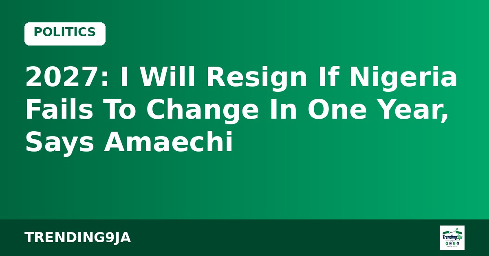
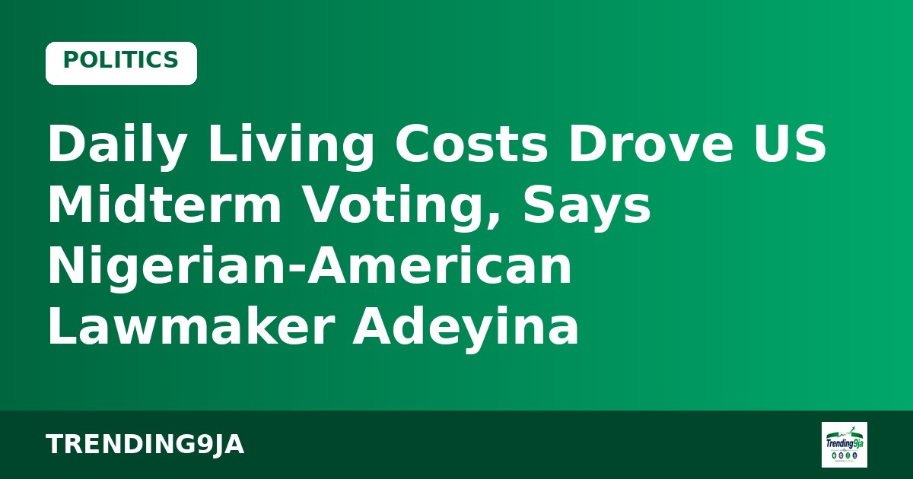

Australia Releases Official Fees For Citizenship Applications
Australia has announced official citizenship fees, charging standard applicants $595 while offering an $85 concession rate for eligible candidates, Legit.ng reports.

Rotimi Amaechi, the vice-presidential candidate of the African Democratic Congress (ADC), has declared that he will step down from office if citizens do not see positive changes within twelve months of his party assuming power, Punch reports.
Speaking during an interview on NewsCentral TV, the former governor of Rivers State stated that he is prepared to quit if an administration headed by Atiku Abubakar fails to deliver measurable progress. He expressed strong confidence in Atiku's leadership, asserting that Nigerians would view him as a hero during his initial year in governance.
Outlining the party's economic plan ahead of the 2027 general election, Amaechi detailed a proposed production subsidy scheme. Under this system, the government would supply crude oil to local refiners below international market rates, on the condition that the savings are passed down to consumers.
The ADC running mate noted that refiners who refuse to reduce their pump prices would not be eligible for the relief. He explained that the goal is to lower fuel costs for everyday citizens rather than simply boosting the profits of refining companies.
Amaechi also highlighted agricultural reforms, promising that an ADC administration would review existing policies to end food importation. He stated that investing heavily in local farmers would generate employment, create wealth, and help tackle the nation's security challenges.
Sources: Punch
← More Politics storiesAustralia has announced official citizenship fees, charging standard applicants $595 while offering an $85 concession rate for eligible candidates, Legit.ng reports.

Nigerian-American lawmaker Segun Adeyina says voters in the US midterm elections prioritized personal financial issues over political party slogans.

The 'Tinubu Must Stay' group has urged South-South youths and women to back President Bola Tinubu's 2027 re-election bid to sustain regional development.
Nigeria's trending news, politics and entertainment, straight to your email.
By subscribing you agree to our Privacy Policy. Unsubscribe any time.